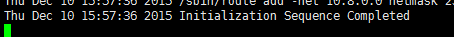
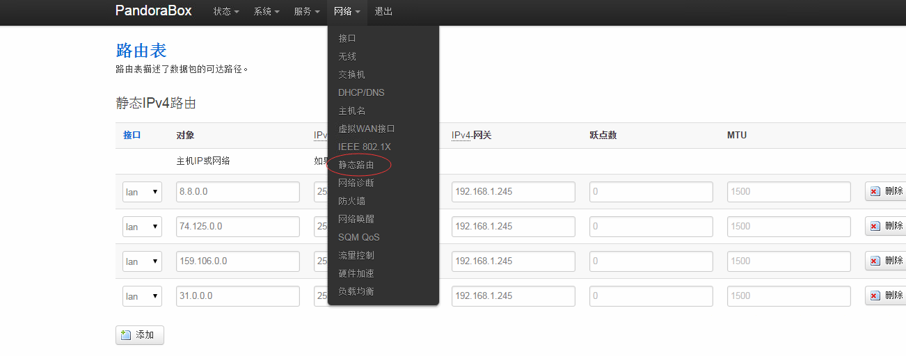
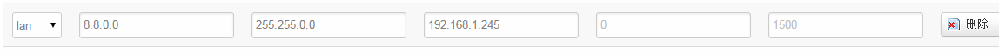
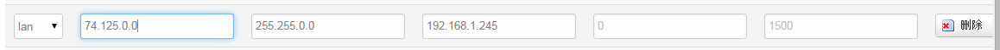

[toc]
本文需要已具备的因素
基于OpenWRT的路由器（我的设备为Newifi Y1） 树莓派（树莓派2） OpenVPN账户（DigitalOcean自己搭建）
初始化
在树莓派上安装OpenVPN
apt-get install openvpn
启动OpenVPN
拷贝OpenVPN的五个文件到/etc/openvpn/config中(没有的话自己新建文件夹)
修改.ovpn文件中的ca、cert、key 三项后对应位置为实际对应的位置
openvpn --config /etc/openvpn/config/*.ovpn &
一般出现此条信息即为成功

连接成功后ifconfig检查是否出现名为tun0的网卡
开启树莓派转发
vi /etc/sysctl.conf
取消注释以下一条并修改其参数
net.ipv4.ip_forward=1
执行
sysctl -p
使刚才的修改立即生效
配置iptables，使系统强制转发所有流量
iptables -A INPUT -m state --state ESTABLISHED,RELATED -j ACCEPT
iptables -t nat -I POSTROUTING -s 192.168.1.0/24 -j MASQUERADE
iptables-save
配置路由器
树莓派分配静态IP
网路-->DHCP/DNS-->静态地址分配
为Google DNS增加静态路由
网路-->静态路由-->路由表  将Google DNS转发至刚才为树莓派分配的静态地址中 
树莓派设置路由
/sbin/route add -net 8.8.0.0/16 dev tun0
至此基础环境搭建完毕
处理新规则流程
以自动处理Google为例讲解此流程
路由器
nslookup www.google.com 8.8.8.8
得到未被污染的IP地址 编辑dnsmasq
vi /etc/dnsmasq.conf
在末尾增加以下条目
server=/google.com/8.8.8.8
使Google域名使用8.8.8.8进行解析 添加完毕后重启dnsmasq
/etc/init.d/dnsmasq restart
将未被污染的ip地址添加到之前修改过的静态路由表中  保存应用生效
树莓派
增加路由规则
/sbin/route add -net 74.125.0.0/16 dev tun0
检查路由规则
netstat -rn
即可看到当前路由规则
使用以下命令检查是否可以打开网页
curl www.google.com
如获取到
<HTML><HEAD><meta http-equiv="content-type" content="text/html;charset=utf-8">
<TITLE>302 Moved</TITLE></HEAD><BODY>
<H1>302 Moved</H1>
The document has moved
<A HREF="http://www.google.com.hk/url?sa=p&hl=zh-CN&pref=hkredirect&pval=yes&q=http://www.google.com.hk/%3Fgws_rd%3Dcr&ust=1449738375234893&usg=AFQjCNEvR5Yi7Es8o3Uk6P2TlyC7uPRLZA">here</A>.
</BODY></HTML>
即为在树莓派上已经通过OpenVPN转发此流量
测试
在路由器上继续执行
curl www.google.com
如依然可以返回刚才的结果，则系统解析转发正常
FAQ
其实此时Google依然无法打开，从刚才获取到的html文件中也可看出，Google被重定向到离你的服务器最近的机房中，此时需要继续分析，添加规则。本文仅提供思路，方法大同小异
因为涉及到DNS缓存、浏览器缓存等问题可能依然会出现各种奇葩问题，需耐心寻找解决办法 and Google it
正常情况下，OpenVPN一天内被封杀端口属于正常情况，具体的信息为TLS auth error，更换端口可暂时解决
附录
提供两种顺利使用OpenVPN方法
ssh隧道双重加密
- 修改OpenVPN服务端配置文件使其为tcp模式
- 修改客户端配置文件使其为tcp模式并且修改服务器地址为
localhost - 使用如下命令建立ssh隧道将服务器端口映射至本机
ssh -L 1194:localhost:1194 user@webserver
- 启动VPN客户端连接
使用shadowsocks代理
SS提供了OpenVPN使用ss代理连接的办法 官方文档的地址为 https://github.com/shadowsocks/shadowsocks/wiki/Connect-to-OpenVPN-over-Shadowsocks
具体办法是： 服务端启动ss服务及OpenVPN服务 客户端启动ss服务
sslocal -c /etc/shadowsocks.json -d start
在OpenVPN的.ovpn文件末尾加上
socks-proxy 127.0.0.1 1080
route SHADOWSOCKS_SERVER_IP 255.255.255.255 net_gateway
即可使用shadowsocks代理OpenVPN流量
Disqus 留言
comments powered by Disqus